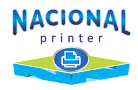

|  |
| Prezado cliente, este software tem o objetivo de trazer maior agilidade de contato, permitindo conexão direta entre o técnico e você, sem interferência de outros setores. O acesso permitirá que você tenha informações 24 horas com total autonomia, para acompanhar o status técnico das ordens de serviços e autorizar ou não as intervenções técnicas orçadas em seu equipamento, antes da sua execução, de acordo com os orçamentos específicos on-line. Nacional Printer, “a sua boa impressão”. |